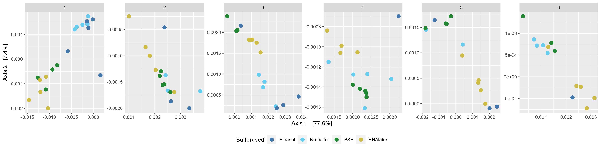
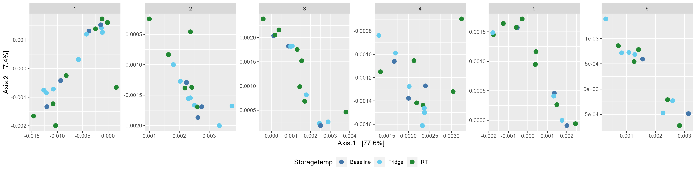

Chapter 8 Supp figure 2
Beta diversity plots of samples using the preprocessed relative abundance values.
8.2 Weighted unifrac plots with relative abundance
Create the ordination data
## Warning in matrix(tree$edge[order(tree$edge[, 1]), ][, 2], byrow = TRUE, : data length [2799] is not a sub-multiple
## or multiple of the number of rows [1400]8.2.1 Figure A: Buffer used faceted by patient
p <- plot_ordination(physeq_relabund, ord,
color="Bufferused") +
geom_point(size=3) +
facet_wrap(~Patientnumber, nrow = 1, scales = "free") +
theme(legend.position="bottom")
ggsave(plot = p,
"./figures/weighted_unifrac_Bufferused_facet_patient.png",
device = "png", units = "mm", height = 100, width = 400)
8.2.2 Figure B: Storage temperature
p <- plot_ordination(physeq_relabund, ord,
color="Storagetemp")+
geom_point(size=3) +
facet_wrap(~Patientnumber, nrow = 1, scales = "free") +
theme(legend.position="bottom")
ggsave(plot = p,
"./figures/weighted_unifrac_Storagetemp_facet_patient.png",
device = "png", units = "mm", height = 100, width = 400)
8.2.3 Figure C: Storage conditions
p <- plot_ordination(physeq_relabund, ord,
color="Storageconditions") +
geom_point(size=3) +
facet_wrap(~Patientnumber, nrow = 1, scales = "free") +
theme(legend.position="bottom")
ggsave(plot = p,
"./figures/weighted_unifrac_Storageconditions_facet_patient.png",
device = "png", units = "mm", height = 100, width = 400)8.2.4 Figure D: Buffer and storage condition faceted by patient
p <- plot_ordination(physeq_relabund, ord,
color="Storageconditions", shape = "Bufferused")+
geom_point(size=3) +
facet_wrap(~Patientnumber, nrow = 1, scales = "free") +
theme(legend.position="bottom")
ggsave(plot = p,
"./figures/weighted_unifrac_Bufferused_and_Storageconditions_facet_patient.png",
device = "png", units = "mm", height = 100, width = 400)
8.2.5 Statistical test
#Will use Unifrac() & adonis() function from vegan package
library(vegan)
#RVAideMemoire package for pairwise permanovas
#pairwise.perm.manova() function
#https://www.rdocumentation.org/packages/RVAideMemoire/versions/0.9-81-2/topics/pairwise.perm.manova
#install.packages('RVAideMemoire')
library(RVAideMemoire)
#Carry out PERMANOVA test
#Resource using for help
#https://microbiome.github.io/tutorials/PERMANOVA.html
#https://mibwurrepo.github.io/Microbial-bioinformatics-introductory-course-Material-2018/beta-diversity-metrics.html
#Extract metadata
meta <- meta(physeq_relabund)
#adonis doesn't have weighted unifrac distance so need to calculate it
unifrac.dist <- UniFrac(physeq_relabund, weighted = TRUE,normalized = TRUE,
parallel = FALSE,fast = TRUE)
#PERMANOVA tests
#Fig 3A stats
patient_permanova <-
adonis(unifrac.dist ~ Patientnumber,
data = meta, permutations=999, method="euclidean")
write.table(as.data.frame(patient_permanova$aov.tab),
file = "./data/patient_permanova.tsv",
sep = "\t", quote=FALSE)
#buffer stats
buffer_permanova <-
adonis(unifrac.dist ~ Bufferused ,
data = meta, permutations=999, method="euclidean")
write.table(as.data.frame(buffer_permanova$aov.tab),
file = "./data/buffer_permanova.tsv",
sep = "\t", quote=FALSE)
#supp fig 2A stats
buffer_patient_permanova <-
adonis(unifrac.dist ~ Bufferused + Patientnumber,
data = meta, permutations=999, method="euclidean")
write.table(as.data.frame(buffer_patient_permanova$aov.tab),
file = "./data/buffer_patient_permanova.tsv",
sep = "\t", quote=FALSE)
#supp fig 2b stats
temp_patient_permanova <-
adonis(unifrac.dist ~ Storagetemp + Patientnumber,
data = meta, permutations=999, method="euclidean")
write.table(as.data.frame(temp_patient_permanova$aov.tab),
file = "./data/temp_patient_permanova.tsv",
sep = "\t", quote=FALSE)
#supp fig 2c stats
condition_patient_permanova <-
adonis(unifrac.dist ~ Storageconditions + Patientnumber,
data = meta, permutations=999, method="euclidean")
write.table(as.data.frame(condition_patient_permanova$aov.tab),
file = "./data/condition_patient_permanova.tsv",
sep = "\t", quote=FALSE)
#supp fig 2d stats
buffer_condition_patient_permanova <-
adonis(unifrac.dist ~ Bufferused + Storageconditions + Patientnumber,
data = meta, permutations=999, method="euclidean")
write.table(as.data.frame(buffer_condition_patient_permanova$aov.tab),
file = "./data/buffer_condition_patient_permanova.tsv",
sep = "\t", quote=FALSE)
#Pairwise permanovas
#Patients
patient_pair_permanova <-
pairwise.perm.manova(resp=unifrac.dist,fact=meta$Patientnumber,
nperm = 999)
write.table(as.data.frame(patient_pair_permanova$p.value),
file = "./data/patient_pair_permanova.tsv",
sep = "\t", quote=FALSE)
#Buffers
buffer_pair_permanova <-
pairwise.perm.manova(resp=unifrac.dist,fact=meta$Bufferused,
nperm = 999)
write.table(as.data.frame(buffer_pair_permanova$p.value),
file = "./data/buffer_pair_permanova.tsv",
sep = "\t", quote=FALSE)
#Buffer & patients
meta$Bufferused_and_Patientnumber <- paste0(meta$Bufferused,"_",meta$Patientnumber)
buffer_patient_pair_permanova <-
pairwise.perm.manova(resp=unifrac.dist,fact=meta$Bufferused_and_Patientnumber,
nperm = 999)
write.table(as.data.frame(buffer_patient_pair_permanova$p.value),
file = "./data/buffer_patient_pair_permanova.tsv",
sep = "\t", quote=FALSE)
#Temp & patients
meta$Storagetemp_and_Patientnumber <- paste0(meta$Storagetemp,"_",meta$Patientnumber)
temp_patient_pair_permanova <-
pairwise.perm.manova(resp=unifrac.dist,fact=meta$Storagetemp_and_Patientnumber,
nperm = 999)
write.table(as.data.frame(temp_patient_pair_permanova$p.value),
file = "./data/temp_patient_pair_permanova.tsv",
sep = "\t", quote=FALSE)
#Condition & patients
meta$Storageconditions_and_Patientnumber <- paste0(meta$Storagetemp,"_",meta$Storageconditions)
cond_patient_pair_permanova <-
pairwise.perm.manova(resp=unifrac.dist,fact=meta$Storageconditions_and_Patientnumber,
nperm = 999)
write.table(as.data.frame(cond_patient_pair_permanova$p.value),
file = "./data/cond_patient_pair_permanova.tsv",
sep = "\t", quote=FALSE)